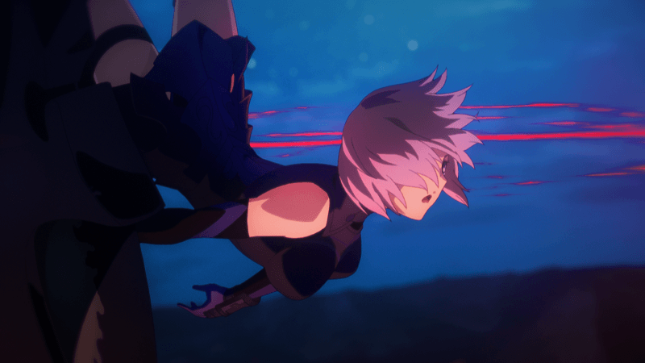

- 2/17
- 【來自迦爾帝亞廣報局】關於合作活動
感謝使用「Fate/Grand Order」。
在2月下旬將舉辦「Fate/Grand Order」首次的合作活動。
關於合作活動的合作作品名稱，會在2月19日（五）23點00分～23點30分放送的動畫「Fate/Zero」節目內以電視廣告發表。
【 「Fate/Grand Order 」電視廣告概要 】
■放送預定：2016年2月19日（五） 23:00～23:30 動畫版「Fate/Zero」節目内
■放送電視台：於TOKYO MX・とちぎテレビ・群馬テレビ・BS11全國同時放送

關於其他的活動情報，會在電視廣告放送後，隨之發表。
今後也請多多指教「Fate/Grand Order」。